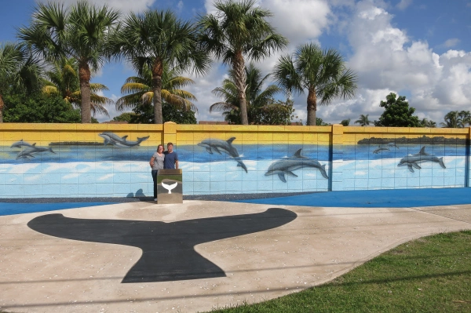

In Search of Wyland Walls

Wow! What a way to end our Florida trip.
Water for Life is the last wall Wyland painted in the US (and the last wall still in existence) and so much is notable about it. The first being that it’s just a wall. Not part of a building, just a long wall along a walkway.
Second is how the community has embraced it. In our search of walls we spend a lot of time wondering why the wall are where they are and how the community they are in feel about the walls. The neglect of some walls is so surprising to us while other walls seem so well maintained. In all the walls we have seen, we’ve never seen what appears to be a purpose built place for a Wyland wall. North Lauderdale appears to have built the entire area to serve as a showcase for the wall with the sidewalk, landscaping and signage all purpose built to show off the wall. It was so nice to see.
Third is how the mural actually integrates with it’s surrounding. For example, in one section the mural depicts the roots of the trees behind the wall. It’s very cool.
Lastly, I’ve never had such a challenge photographing a wall. It is several hundred feet long and there is just no way to do it justice in a photograph. This one just has to be seen in person.